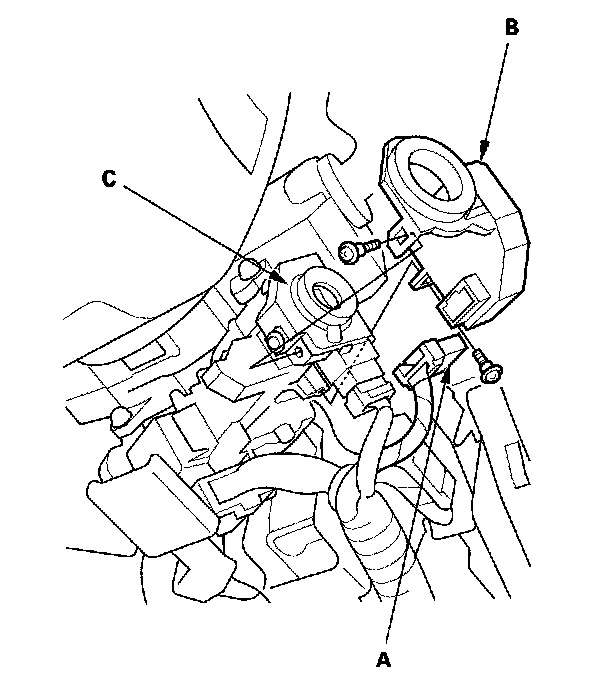

Alarm Module: Service and Repair
Immobilizer-keyless Control Unit Replacement1. Remove the driver's dashboard lower cover.
2. Remove the steering column covers.

3. Disconnect the 7P connector (A) from the immobilizer-keyless control unit (B).
4. Remove the two screws and the immobilizer keyless control unit from the ignition key cylinder (C).
5. Install the immobilizer-keyless control unit in the reverse order of removal.
6. After replacement, register the immobilizer-keyless control unit, and make sure the immobilizer system works properly.